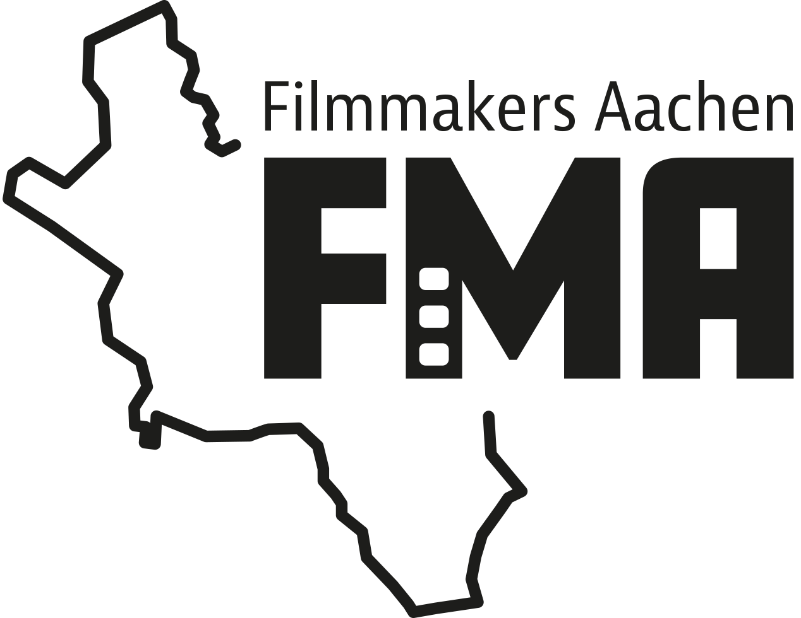

Über uns
Bist du Filmemacher:in oder hast einfach eine große Leidenschaft für Kino und Filmkunst? Du liebst es, dich über kreative Ideen, Technik und spannende Projekte auszutauschen? Deine Community ist toll, aber manchmal fehlt dir der kreative Austausch mit anderen Filmschaffenden? Dann bist du bei uns genau richtig!
Wir möchten uns regelmäßig treffen, um über unsere Erfahrungen, Projekte und aktuelle Themen der Filmwelt zu sprechen. Dabei erwarten dich eine inspirierende Mischung aus Workshops, Talks und Networking – ein Raum für Kreativität, Austausch und neue Verbindungen.
Unsere Veranstaltungen sind immer gratis und eine Anmeldung ist auch nicht erforderlich. Komm einfach vorbei, wir freuen uns auf Dich!